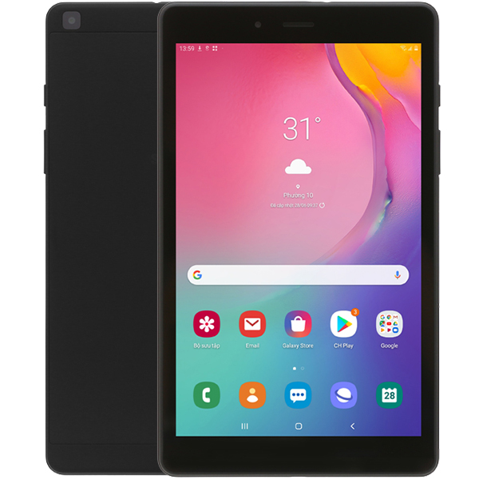

Samsung Galaxy Tab A8 8" T295 (2019)
3.690.000đ
Máy Tính Bảng Samsung Galaxy Tab A8 8" T295 (2019) sở hữu kính thước màn hình lớn đem lại không
gian sử dụng thoải mái. Màn hình của chiếc máy tính bảng Samsung được thiết kế theo tỷ lệ 16:10 rất
lý tưởng cho việc đọc sách, tạp chí, đọc báo hoặc lướt web. Đặc biệt với độ phân giải 1280 x 800 pixels
cho hình ảnh hiển thị chi tiết, giúp bạn thoải mái lướt web hay xem phim phụ đề mà không mỏi mắt.